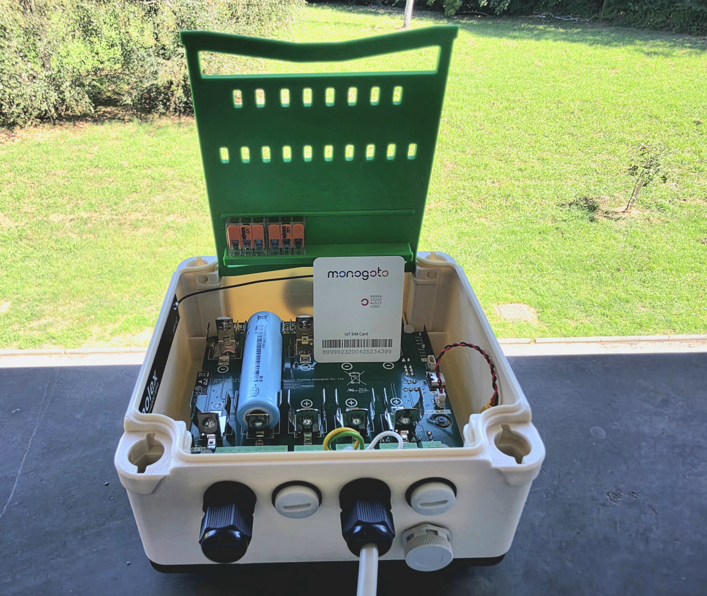
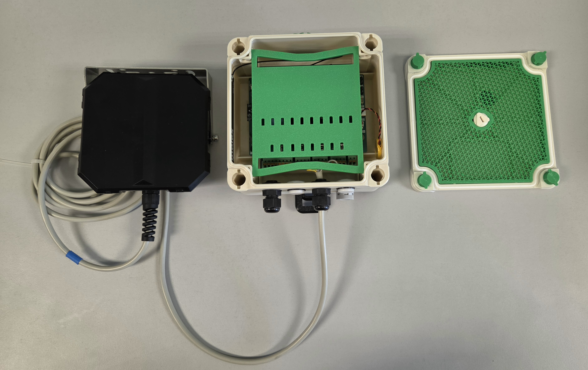
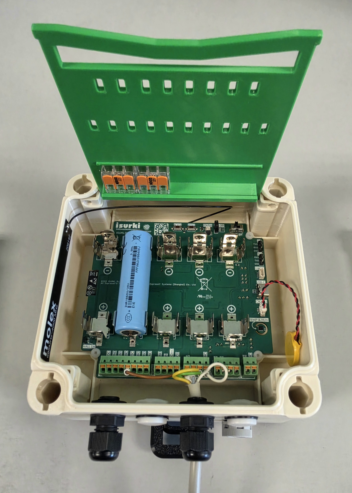
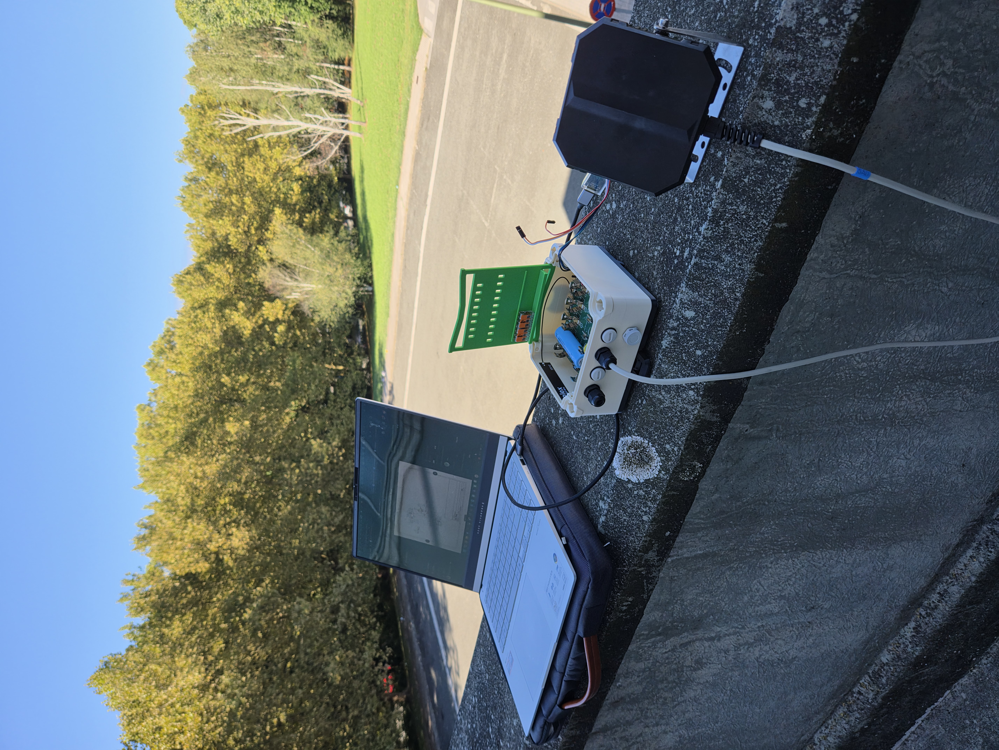

NTN on the nRF9151: Low-Cost Satellite IoT Without a Separate Satellite Modem

Why
Satellite connectivity has always meant a trade-off nobody actually wanted to make: either your device lives in cellular coverage, or you pay for it. A dedicated satellite modem alone can cost more than an entire ISURLOG unit does today — before you've added a single sensor, an enclosure, or a battery that survives a season in the field. That cost has quietly drawn a line across the map: everything inside cellular coverage gets real-time IoT, and everything outside it — the forest, the mountain pass, the offshore platform, the pipeline crossing open country — gets a manual visit, or nothing at all.
NTN is the reason that line is starting to move.
Non-Terrestrial Networks — standardized in 3GPP Release 17 — do something deceptively simple: they let a normal NB-IoT device talk to a satellite using the same protocol stack it already uses to talk to a cell tower. No proprietary satellite radio. No second modem bolted onto the board. No separate ecosystem to integrate. If your device's modem supports NTN, reaching a satellite is a firmware capability, not a hardware redesign.
ISURLOG's NB-IoT connectivity already runs on the Nordic nRF9151 — the same chip driving this shift. That's the part worth sitting with for a second: a datalogger built from well under €500 in materials, open-source down to the firmware, engineered from day one to run for years on a couple of Li-Ion 18650 cells — is standing on hardware that can also reach a satellite. Not a €5,000 satellite-only unit. Not a closed platform where you rent connectivity and hope the vendor is still around in three years. The same board, the same firmware repo, the same low-power discipline that gets ISURLOG to ~20µA in deep sleep — extended to cover the one gap terrestrial cellular could never close.
That combination — satellite reach, industrial-grade sensing, real battery life, and a firmware anyone can read line by line — isn't something the IoT industry has been able to offer at this price point. It's usually pick two. This is what it looks like to not have to.
This post walks through what NTN actually is, what it takes to bring it up on an nRF9151, and what ISURLOG looked like the first time it reached a satellite instead of a tower.
What you'll need
| Item | From Isurki | Bring your own |
|---|---|---|
| ISURLOG datalogger — PCB with NB-IoT module (nRF9151) | €387 | No alternative — this is the core hardware |
| Antenna — same one used for regular terrestrial NB-IoT, no NTN-specific antenna needed | Included with the unit | Molex 209142-0180 — ~€3.78, or any other NB-IoT-compatible antenna with 50 Ω impedance |
| 3D-printed enclosure (optional) | €35 | 💬 In discussion — direction not yet decided. If you'd find this useful, let us know |
| Li-Ion 18650 batteries — 2 minimum for transmission current peaks, 5 for full internal capacity | €30 (set of 5, rechargeable) | e.g. Samsung INR18650-35E, 3400mAh / 8A — ~€2.59/unit |
| NTN SIM card | — | Monogoto — check NTN satellite coverage for your region before ordering |
| Sensor (optional — any ISURLOG-compatible sensor works) | — | Example used here: a Paratronic NRV485 radar level sensor over Modbus RS485. No extra sensor needed to just test the NTN link — the onboard SHT30 (temperature/humidity) or LIS2DH12 (accelerometer) work fine too. |
Total hardware cost: ~€417 without the enclosure, ~€452 with it (excl. VAT) — plus the Monogoto SIM/data plan (pricing depends on the plan chosen, not included above). For the full accessory catalog and an interactive price builder, see Parts and Accessories and the configurator.

The bench setup — Paratronic radar sensor, ISURLOG in its 3D-printed enclosure, lid off to the side.
A clear view of the sky
Unlike terrestrial NB-IoT, which happily works indoors or in a pocket, NTN needs the antenna to have a clear line of sight to the sky — no roof, no dense tree cover, ideally outdoors and away from tall buildings. Testing from inside a building won't connect, no matter how well everything else is set up.
Tools you'll also need
Beyond the materials above, a bit of general-purpose tooling — reusable across projects, not something bought per unit:
- A computer (Windows, macOS, or Linux) — to flash firmware and run the tools below.
- A UART-to-USB TTL cable — the ISURLOG doesn't have an onboard USB-to-UART converter, so this is how the ESP32 side gets flashed. Full details in Flashing and Application Upload.
- An nRF9160-DK, a 6-pin TAG-Connect cable, and nRF Connect for Desktop — this is what actually loads the NTN modem firmware in the next section. No SDK or toolchain needed, just the Programmer app. Full details in 5.6 Flashing Hardware Requirements.
How NTN actually works
Terrestrial cellular only covers around 15% of the Earth's surface — despite reaching roughly 90% of the population, since coverage clusters around where people actually live. NB-IoT already solved the "long battery life, low bandwidth" side of the equation for that 15%. What 3GPP Release 17 adds is a way to reach the other 85%: the same NB-IoT protocol, relayed through a satellite instead of a cell tower.
Not all satellites work the same way. GEO satellites sit at roughly 36,000 km altitude, stay fixed over one region, and relay the signal transparently — continuous coverage, but low throughput (around 1-2 kbps), which suits infrequent small messages like alarms. LEO satellites orbit far closer, at 600-800 km, completing a full pass roughly every 90 minutes, and offer higher throughput (20-40 kbps) — but a single satellite is only overhead for a few minutes at a time, so always-on coverage needs a constellation of tens to hundreds of them working together. Monogoto's network is a hybrid of both — GEO via partners like Skylo and Viasat, LEO via OQ Technology. This test connected over Skylo's GEO network specifically: the registration log in Step 4 below reports PLMN 90198, Skylo's assigned code.
Being GEO changes what's actually driving the radio-level engineering here — a geostationary satellite doesn't move relative to the ground, so there's no meaningful Doppler shift to compensate for. What it does add is distance: at roughly 36,000 km, one-way signal delay is on the order of a hundred milliseconds or more, far beyond what terrestrial NB-IoT's timing budget assumes. NB-NTN — the NB-IoT flavor of NTN — extends the standard's timing advance and random access procedure to cover that, without changing the underlying waveform or the AT-command interface a device already speaks to reach a terrestrial tower.
That's the part that matters for hardware: the nRF9151 doesn't need a different radio to do this. Nordic markets it as a single "Multimode LTE-M/NB-IoT/NB-NTN with GNSS" chip — the same silicon already driving ISURLOG's terrestrial NB-IoT connection handles NTN too, with the same antenna and the same SIM slot. Bringing NTN up on ISURLOG is a firmware and configuration change, not a new bill of materials — though not every terrestrial behavior carries over unchanged; see Limitations below for what doesn't (yet).
The practical difference shows up at connection time, not before it. A terrestrial NB-IoT device attaches to the network in seconds; this test's NTN connection took a real, multi-minute wait to register instead — the transcript is in Step 4 below. Designing for NTN means planning around a registration process that can take minutes, not the near-instant, always-on assumption terrestrial NB-IoT gets to make.
Setting it up on ISURLOG
Step 1: Flash the NTN modem firmware
The nRF9151 ships from the factory speaking terrestrial NB-IoT/LTE-M. Reaching a satellite starts with loading Nordic's dedicated NTN modem firmware — at the time of writing, mfw_nrf9151-ntn_1.0.1, available from the same Nordic downloads page as the regular modem firmware.
The flashing procedure is exactly the one already documented for updating any modem firmware binary: nRF9160-DK connected via the TAG-Connect cable to the ISURLOG's JTAG port, loaded through the Programmer app in nRF Connect for Desktop. Only the binary changes — swap the usual mfw_nrf91x1_x.x.x.zip for the NTN one. The full step-by-step is in 5.7 Updating Modem Firmware from Official Binaries.
Step 2: Install the latest ISURLOG firmware
Only needed if the unit isn't already running the latest firmware — every ISURLOG ships from the factory with the latest release pre-installed, so this step is really for units that have been sitting around for a while, or that already had an older firmware flashed onto them. With the modem side updated, the ESP32 application firmware needs to be current too. The easiest path is IsurDASH's own guided updater: Mantenimiento de dispositivos → Actualización de firmware, picking either Remoto (over the air, on firmware v1.1.9+) or Serial port (USB) (wired, works on any version — IsurDASH walks through the RST/BOOT sequence itself). Either way, choose the release marked Latest from the list pulled from GitHub. Full details in 6.8. Device Maintenance.
That flow only installs official published releases. Flashing outside of IsurDASH — using the UART-to-USB cable directly, with a locally-built firmware.bin — is also an option, and the only one if you're working from a custom or not-yet-published build. See Flashing and Application Upload for that procedure.
Step 3: Insert the SIM, connect the antenna, power on
With both firmwares up to date, insert the Monogoto NTN SIM and double-check the antenna is properly connected to the PCB's U.FL socket — before powering on, not after, since transmitting without an antenna connected can damage the RF circuit. From there it's the same power-up sequence as any ISURLOG: flip the ON/OFF switch on the PCB. Full details in 4.4. Power-Up Sequence.

The ISURLOG board on its own — Molex antenna cable and the Li-Ion 18650 battery.
Step 4: Connect to the NTN network
With the ISURLOG powered on, the modem side is configured and connected from a MicroPython REPL — no custom firmware needed, since the nb_iot module already ships in the standard firmware. Any of the REPL access methods covered in MicroPython REPL work here. One session covers everything from switching to the external SIM through to attempting the connection:
lat, lon, elevation, and precision (a position-uncertainty estimate) below are this test's own values — swap them for your own deployment's before running this. More on what they're actually used for in the AT%LOCATION note further down.
>>> from modules import nb_iot
>>> lat = 43.32898
>>> lon = -1.82535
>>> elevation = 15
>>> precision = 10
>>> apn = "data.mono"
>>> nb_iot_module = nb_iot.NBIoT(uart_id=2, tx_pin=4, rx_pin=2, baudrate=115200)
>>> nb_iot_module.select_SIM(external_sim=True)
[58] DEBUG: Sent AT command: AT+CFUN=0
[60] DEBUG: Received response: OK
[60] DEBUG: Sent AT command: AT#XGPIOCFG=1,12
[62] DEBUG: Received response: OK
[62] DEBUG: Sent AT command: AT#XGPIO=0,12,0
[64] DEBUG: Received response: OK
>>> nb_iot_module.send_at_command("AT+CGMR", timeout=2000)
[65] DEBUG: Sent AT command: AT+CGMR
[67] DEBUG: Received response: mfw_nrf9151-ntn_1.0.1
OK
'mfw_nrf9151-ntn_1.0.1\r\nOK'
>>> nb_iot_module.send_at_command_check("AT%XSYSTEMMODE=0,0,0,0,1")
[69] DEBUG: Sent AT command: AT%XSYSTEMMODE=0,0,0,0,1
[71] DEBUG: Received response: OK
True
>>> nb_iot_module.send_at_command_check('AT%XBANDLOCK=2,,"23,255,256"')
[76] DEBUG: Sent AT command: AT%XBANDLOCK=2,,"23,255,256"
[78] DEBUG: Received response: OK
True
>>> nb_iot_module.send_at_command_check(f'AT%LOCATION=2,"{lat}","{lon}","{elevation}",{precision},0')
[81] DEBUG: Sent AT command: AT%LOCATION=2,"43.32898","-1.82535","15",10,0
[83] DEBUG: Received response: OK
True
>>> nb_iot_module.send_at_command_check(f'AT+CGDCONT=1,"IP","{apn}"')
[85] DEBUG: Sent AT command: AT+CGDCONT=1,"IP","data.mono"
[87] DEBUG: Received response: OK
True
>>> nb_iot_module.send_at_command_check("AT+CFUN=1")
[90] DEBUG: Sent AT command: AT+CFUN=1
[92] DEBUG: Received response: OK
True
>>> nb_iot_module.wait_for_network_connection(timeout=300000)
[97] DEBUG: Sent AT command: AT%XMONITOR
[99] DEBUG: Received response: %XMONITOR: 4
OK
[101] DEBUG: Sent AT command: AT%XMONITOR
[103] DEBUG: Received response: %XMONITOR: 4
OK
...
[397] DEBUG: Sent AT command: AT%XMONITOR
[399] DEBUG: Received response: %XMONITOR: 2
OK
...
[439] DEBUG: Sent AT command: AT%XMONITOR
[441] DEBUG: Received response: 5,"","","90198","3AB0",14,255,"0024D9B0",24,228841,4,14,"","11100000","00111000","11100000",0,3,8,8
OK
[439] DEBUG: Sent AT command: AT+CGDCONT?
[441] DEBUG: Received response: +CGDCONT: 0,"IP","data.mono","10.137.26.202",0,0
+CGDCONT: 1,"IP","data.mono","",0,0
OK
[441] INFO: Verified data session on CID 0. IP: 10.137.26.202
[441] INFO: Device fully connected with IP address.
True
The uart_id/tx_pin/rx_pin/baudrate values match the ISURLOG's standard NB-IoT UART wiring, documented in 5.3 UART Communication and AT Commands. A few of these commands are worth calling out:
select_SIM(external_sim=True)— switches the modem from the board's integrated eSIM to the external Nano-SIM slot, where the Monogoto NTN SIM is inserted. Under the hood it drives the same GPIO12 SIM-select line documented in 5.5 SIM Selection and GPIO Control.AT+CGMR— reads back the modem firmware version, confirmingmfw_nrf9151-ntn_1.0.1from Step 1 actually took.AT%XSYSTEMMODE=0,0,0,0,1— this is the same system-mode command used to pick LTE-M/NB-IoT/GPS on terrestrial ISURLOG units, with a fifth parameter added for NTN mode. The extension, not a replacement — same command a reader would already recognize from a terrestrial setup.AT%XBANDLOCK— restricts the modem to the specific NTN bands relevant to this deployment.AT%LOCATION— this one has no terrestrial equivalent. A cell tower's position is irrelevant to the device; a satellite's visibility from a given point on Earth very much isn't, so the modem is given an approximate location (lat/lon/elevation, with a precision estimate) to help it calculate the initial timing advance, delay compensation, and beam selection for the stationary satellite.AT+CGDCONT— the usual PDP context/APN setup,data.monobeing Monogoto's.AT+CFUN=1— the actual "go": full functionality, radio on, start trying to register. Everything before this line was configuration; this is what turns it into a connection attempt.wait_for_network_connection(timeout=300000)— a 5-minute timeout, not the few seconds a terrestrial NB-IoT connection takes. This is the real, multi-minute registration wait from the section above, made concrete:AT%XMONITORgets polled repeatedly, its registration-status field moving from4(unknown) to2(searching) and finally5(registered, roaming) — at which point a quickAT+CGDCONT?check confirms an IP address was actually assigned before returningTrue.
Step 5: Read sensors and package the payload
With the connection under way, the next step is reading the sensors and packaging their values into a transmittable payload. This test uses three sensors: a Paratronic NRV485 radar level sensor over Modbus, plus the ISURLOG's own onboard SHT30 (temperature/humidity) and MAX17048 (battery fuel gauge) — a representative real-world sensor mix, not something specific to NTN.
Timestamp first. Every payload gets referenced against the time it was taken, since it might sit in the device's storage for a while before actually being transmitted:
>>> from modules import utils
>>> from modules.power_manager import pm
[17] INFO: ESP32 Wakeup reason: Power-on reset
[17] ERROR: RTC lost power! Time is invalid.
That error means the RTC has no CR2032 backup battery connected — without it, the clock doesn't survive a full power cycle. Either set it by hand, as done here (mode="GPS" just selects the matching string-format parser, not the time source), or with the GPS fix from the bonus track further down (time_str = parsed_gps_response[3]):
>>> time_str = "2026-08-28 09:11:15"
>>> pm.set_rtc_time(time_str, mode="GPS")
[393] INFO: Local time tuple: (2026, 8, 28, 1, 9, 11, 15, 0)
>>> data = [[0, "addUnixTime", pm.rtc.get_unix_time()]]
Battery voltage, from the MAX17048 fuel gauge:
>>> from lib.max1704x import max1704x
>>> max17048_sensor = max1704x()
>>> battery_voltage = max17048_sensor.getVCell()
>>> utils.log_info(f"Battery Voltage: {battery_voltage}mV")
[795] INFO: Battery Voltage: 3671.25mV
>>> data.append([0, "addVoltageInput", battery_voltage])
Temperature and humidity, from the onboard SHT30:
>>> from modules import sht30_sensor
>>> sht_sensor = sht30_sensor.SHT30Sensor()
[1893] INFO: SHT30 sensor initialized successfully.
>>> sensor_data = sht_sensor.read_data()
>>> utils.log_info(f"Temperature: {sensor_data['temperature']:.2f} °C, Humidity: {sensor_data['humidity']:.2f} %RH")
[1912] INFO: Temperature: 27.69 °C, Humidity: 35.39 %RH
>>> data.append([0, "addTemperatureSensor", sensor_data['temperature']])
>>> data.append([0, "addHumiditySensor", sensor_data['humidity']])
Radar level, over Modbus, needs its power turned on first — unlike the two onboard sensors above. The Paratronic NRV485 takes 9–20VDC, so the board's configurable sensor supply is set to 12V through the onboard digital potentiometer/boost regulator, then the VDC rail and the RS485 transceiver's own 5V rail are switched on:
>>> from lib.mcp4017 import MCP4017
>>> pot = MCP4017()
>>> pot.set_mt3608_voltage(12)
>>> pm.control_vdc(1)
>>> pm.control_5v(1)
The sensor needs about 12 seconds after power-up to settle before its reading is worth trusting:
>>> from modules import modbus_sensor
>>> modbus_module = modbus_sensor.ModbusSensor(baudrate=9600, data_bits=8, parity=None, stop_bits=1)
[2453] WARNING: Pin configuration: en_pin: 33 rx_pin: 14 tx_pin: 23
>>> slave_addr = 1
>>> fc = 3
>>> register_addr = 5
>>> is_fp = False
>>> value = modbus_module.read_modbus_data(slave_addr, fc, register_addr, is_fp)
[2646] INFO: Modbus response: (2094,)
>>> value = value[0] / 1000
>>> data.append([0, "addModbusGenericInput", value])
The raw register value (2094) is the level in millimeters — dividing by 1000 gives the reading in meters.
Encoding the payload. With all three readings in data, it gets run through ISURKI's own LPP-style codec:
>>> from lib.IsurlogLPP import IsurlogLPPEncoder
>>> encoder = IsurlogLPPEncoder()
>>> encoded_payload = encoder.encode(data)
>>> utils.log_info(f"Encoded Payload: {encoded_payload}")
[2840] INFO: Encoded Payload: 00756a913e9700740e570067011400684600050002
That hex string is what actually goes out over the NTN link in the next step.
Step 6: Send the payload

The real test — outdoors, clear sky, ISURLOG connected to a laptop running through this same tutorial.
With the payload encoded, sending it is a plain UDP socket — open, send, close. That's not a stylistic choice: NB-IoT NTN supports UDP traffic only — no TCP/IP, which rules out MQTT (and TLS, HTTPS, WebSockets) directly over the satellite link. The reason is the link itself: TCP's connection handshake and ongoing acknowledgments assume a session that stays up and responds quickly, an assumption that breaks down over intermittent, high-latency satellite connections where a device may only get a short, sparse window to communicate. UDP's fire-and-forget model — no handshake, low overhead — fits that link instead, at the cost of not guaranteeing delivery; retries and deduplication become the application's problem, not the protocol's.
>>> server = "203.0.113.10" # your own UDP receiver's address
>>> port = 1200
>>> nb_iot_module.send_at_command_check("AT#XSOCKET=1,2,0")
[3214] DEBUG: Sent AT command: AT#XSOCKET=1,2,0
[3216] DEBUG: Received response: #XSOCKET: 0,2,17
OK
True
>>> nb_iot_module.send_at_command_check(f'AT#XSENDTO="{server}",{port},"{encoded_payload}"', expected_response="OK", timeout=10000)
[525] DEBUG: Sent AT command: AT#XSENDTO="203.0.113.10",1200,"00756a913e9700740e570067011400684600050002"
[527] DEBUG: Received response: #XSENDTO: 42
OK
True
>>> nb_iot_module.send_at_command_check("AT#XSOCKET=0")
[3301] DEBUG: Sent AT command: AT#XSOCKET=0
[3303] DEBUG: Received response: #XSOCKET: 0,"closed"
OK
True
Bonus track: getting the coordinates automatically
The lat/lon/elevation values used back in Step 4 were typed in by hand — good enough to get the first connection working, but the nRF9151 has its own GPS receiver, and it can work that location out itself instead:
>>> nb_iot_module.send_at_command_check("AT+CFUN=4")
[3811] DEBUG: Sent AT command: AT+CFUN=4
[3813] DEBUG: Received response: OK
True
>>> nb_iot_module.send_at_command_check("AT%XANTCFG=1")
[3827] DEBUG: Sent AT command: AT%XANTCFG=1
[3829] DEBUG: Received response: OK
True
>>> nb_iot_module.send_at_command_check("AT%XCOEX0=1,1,1570,1580")
[3837] DEBUG: Sent AT command: AT%XCOEX0=1,1,1570,1580
[3839] DEBUG: Received response: OK
True
>>> nb_iot_module.send_at_command_check("AT%XSYSTEMMODE=0,0,1,0,0")
[3852] DEBUG: Sent AT command: AT%XSYSTEMMODE=0,0,1,0,0
[3854] DEBUG: Received response: OK
True
>>> nb_iot_module.send_at_command_check("AT+CFUN=31")
[3867] DEBUG: Sent AT command: AT+CFUN=31
[3869] DEBUG: Received response: OK
True
>>> nb_iot_module.send_at_command_check("AT#XGPS=1,0,0,0", expected_response="XGPS")
[4059] DEBUG: Sent AT command: AT#XGPS=1,0,0,0
[4061] DEBUG: Received response: OK
#XGPS: 1,1
True
>>> gps_response = nb_iot_module._wait_for_response("#XGPS", timeout=60000)
>>> gps_response
'#XGPS: 43.328939,-1.825317,68.279625,58.445137,0.245044,0.000000,"2026-08-28 08:31:50"'
>>> nb_iot_module.send_at_command_check("AT#XGPS=0")
[4440] DEBUG: Sent AT command: AT#XGPS=0
[4442] DEBUG: Received response: OK
True
>>> nb_iot_module.send_at_command_check("AT+CFUN=30")
[4463] DEBUG: Sent AT command: AT+CFUN=30
[4465] DEBUG: Received response: OK
True
>>> parsed_gps_response = nb_iot_module._parse_gps_response(gps_response)
>>> parsed_gps_response
[43.32894, -1.825317, 68.27962, '2026-08-28 08:31:50']
No separate GPS antenna needed — the same Molex antenna already on the board picks up the GPS L1 band fine, thanks to an onboard RF amplifier tuned for it. AT%XCOEX0 and AT%XSYSTEMMODE=0,0,1,0,0 switch the modem's RF front-end over to that band for the duration of the fix; AT+CFUN=31/30 are the GNSS-specific functional modes that bracket it (activate, then deactivate once done); and AT#XGPS=1,0,0,0 requests a single-shot fix rather than continuous tracking — enough for an ISURLOG that only needs a location every so often, not a real-time GPS trace.
Limitations and What's Next
Everything above worked, but it's not a finished feature — worth being upfront about the real gaps.
No modem sleep command in NTN firmware. ISURLOG's own nb_iot driver puts the modem to sleep between transmissions with AT#XSLEEP — and that command doesn't appear anywhere in Nordic's NTN AT command reference (v0.8, itself still pre-1.0). The standard 3GPP power-saving mechanisms, PSM (AT+CPSMS) and eDRX (AT+CEDRXS), are both explicitly listed as supported for NTN NB-IoT in that same manual — so the modem clearly can sleep on this firmware, the same way it already does over terrestrial NB-IoT. What's missing is driver work on ISURLOG's side: switching to PSM/eDRX for NTN mode instead of assuming #XSLEEP is always available. Until that lands, running NTN today means the modem stays awake between transmissions — a real cost on a platform whose whole pitch is ~20 µA in deep sleep.
Registration is slow, and the reason isn't confirmed yet. The 5-minute timeout earlier in this post is real, not a conservative default — it took that long to register on Skylo's GEO network (see How NTN actually works above for how we know it was GEO, not LEO). What exactly drives that delay — link acquisition on a weaker signal, an early-firmware inefficiency, something else — isn't confirmed yet. Real deployments should plan around a registration process that can take minutes, not the near-instant, always-on availability terrestrial NB-IoT takes for granted.
No MQTT — UDP only. Covered in Step 6 above: NB-IoT NTN doesn't support TCP/IP, which rules out MQTT along with TLS, HTTPS, and WebSockets over the satellite link directly. Anything built on top of ISURLOG's terrestrial MQTT integration needs a UDP-based path for NTN instead — not a driver gap to fix, but a real architectural difference to design around.
Early software, both sides. The NTN modem firmware (1.0.1) and its own AT command reference (v0.8) are both young. Some of the rough edges here are ISURLOG's to fix; some are simply what "early" looks like industry-wide for NB-NTN right now.
🚧 Coming next
A future post will dig into some of these more advanced uses: getting NTN into a real low-power mode instead of a fully-powered idle modem, receiving data over UDP (downlink, not just uplink), and whatever else falls out of closing the gaps above.
Want to Deploy a Real Installation?
If you have an operational scenario where NTN genuinely earns its place — a site terrestrial NB-IoT or GPRS simply can't reach — we'd like to propose an evaluation program.
What Isurki provides:
- One evaluation unit — an ISURLOG NB-IoT NTN datalogger, at no acquisition cost.
- Global connectivity — access to a solution that guarantees sensor data reception from anywhere on the planet.
- Yours to keep — once the one-year evaluation period is complete, the unit is yours at no cost, no strings attached.
What you provide:
- A real use case — a commitment to install and activate the unit somewhere that technically justifies satellite connectivity (no terrestrial NB-IoT or GPRS coverage).
- Continuity and maintenance — keeping the unit running for at least one year, covering the NTN data plan and any sensors needed (from your own inventory, or acquired for the project).
Program terms:
- Deployment — commit to installing and activating the unit within a reasonable time after receiving it.
- Operation — keep the system active and perform preventive maintenance on the datalogger and sensors throughout the one-year evaluation.
- Technical fit — the application must genuinely require NTN connectivity, with no terrestrial alternative available.
Interested? Reply to us and we'll follow up to coordinate the details.